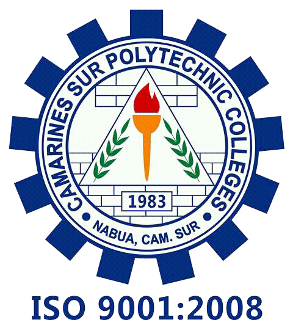
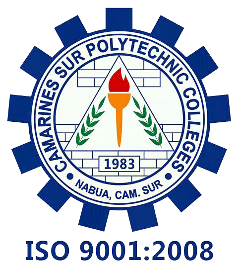
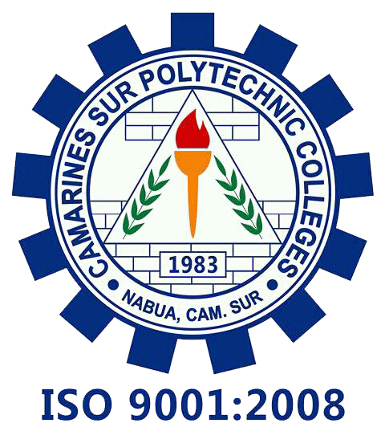

Welcome to Sîlag
 THE OFFICIAL STUDENT-COMMUNITY PUBLICATION OF CAMARINES SUR POLYTECHNIC COLLEGES-BUHI CAMPUS
THE OFFICIAL STUDENT-COMMUNITY PUBLICATION OF CAMARINES SUR POLYTECHNIC COLLEGES-BUHI CAMPUS
THE OFFICIAL STUDENT-COMMUNITY PUBLICATION OF CAMARINES SUR POLYTECHNIC COLLEGES-BUHI CAMPUS


Publication Moderator
Editor-in-Chief
New CSPC Director